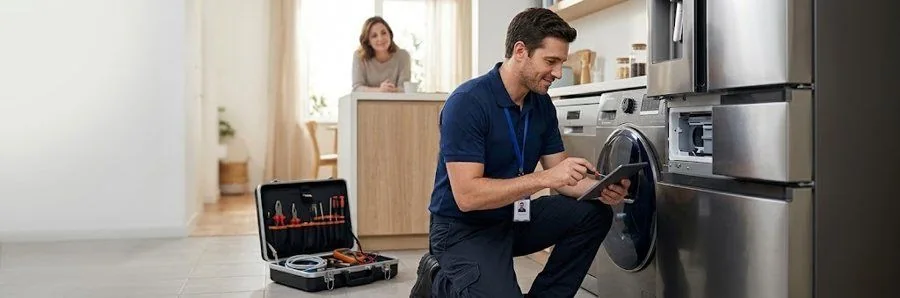
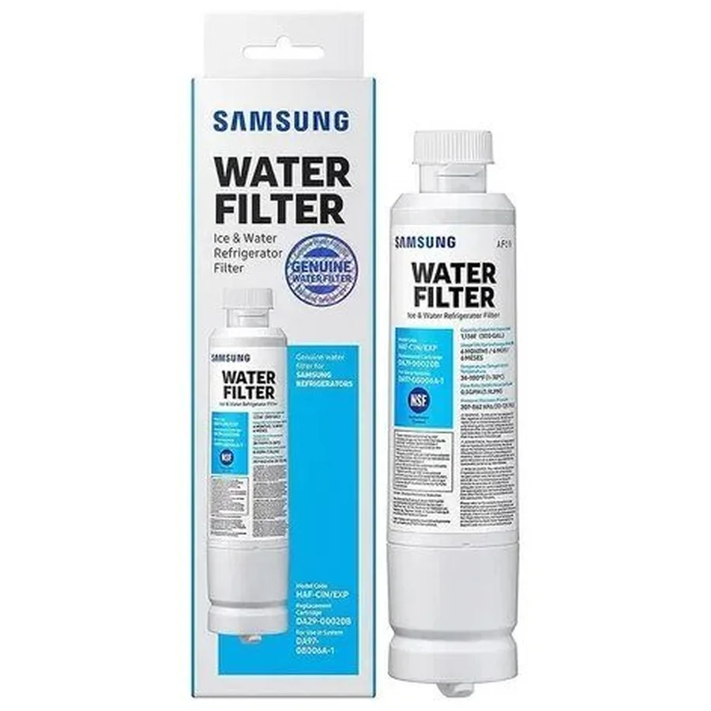
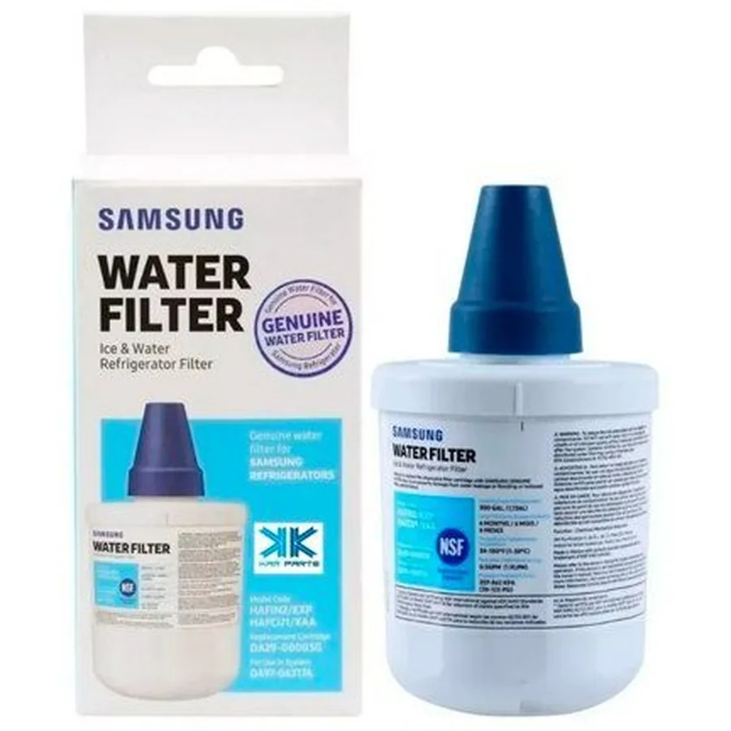
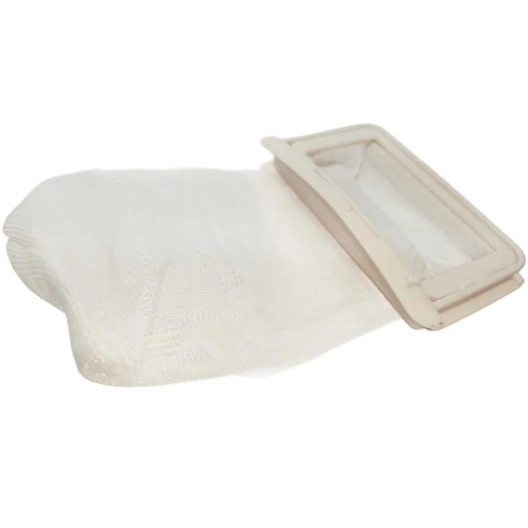

Imágenes de referencia de equipos Samsung.
Cobertura en Quitumbe
Atendemos Quitumbe y sus alrededores, en el sur de Quito. Algunas referencias de la zona:
QuitumbeTerminal Terrestre QuitumbeAv. Morán Valverde
Cómo es la visita en esta zona
Es una zona mixta, con casas, edificios y comercios. Te pedimos la dirección y alguna referencia para llegar sin demoras.
Equipos Samsung que revisamos
Visitamos Quitumbe para reparar y dar mantenimiento a estos electrodomésticos:
Reparación por electrodoméstico en Quitumbe
Zonas cercanas
Preguntas frecuentes
¿Atienden en Quitumbe?
Sí. Escríbenos tu dirección y una referencia por WhatsApp y coordinamos la visita en Quitumbe.
¿Qué equipos Samsung reparan en Quitumbe?
Refrigeradoras, neveras, lavadoras y secadoras.
¿Cuánto cuesta la visita?
Escríbenos con el equipo, el modelo y la falla; te confirmamos el costo de la visita antes de ir.